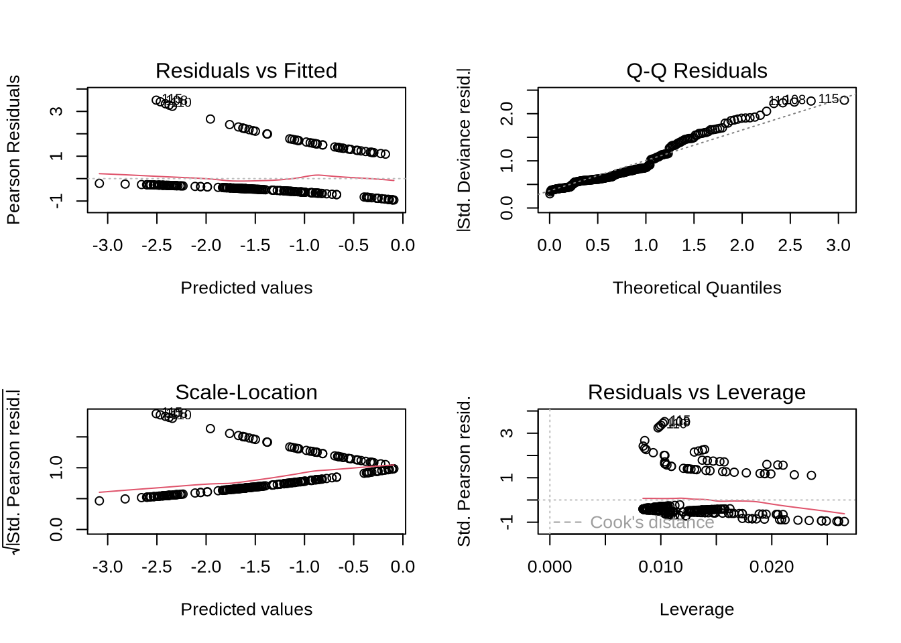

# Loading packages
library(readr)
library(tidyverse)
library(dplyr)
library(DHARMa)
library(MuMIn)
# Reading in the data
sst <- read_csv("/home/jovyan/ENVS-193DS_spring-2025_final/data/SST_update2023.csv") # Nitrogen load data
nest_boxes <- read_csv("/home/jovyan/ENVS-193DS_spring-2025_final/data/occdist.csv") # Nest box habitat dataENVS-193DS_spring-2025_final
Setting Up
# storing colors to use for years
year2018_col <- "#9CB8D9"
year2019_col <- "#779ECB"
year2020_col <- "#5284BD"
year2021_col <- "#3D6A9F"
year2022_col <- "#2F527A"
year2023_col <- "#03254c"
# storing a ggplot theme
theme_set(theme_minimal())Problem 1.
[A] In part one of the results section, they tested for correlation between distance from headwater (km) and annual total nitrogen load (kg year-1) likely by using a Pearson correlation test, providing a p-value of 0.03. In part two of the results section they tested whether the average nitrogen load (kg year-1) was different between five sources with a one-way ANOVA test.
[B] The ANOVA test in part two includes a p-value of 0.02 and conclusion that there is no difference in means among the 5 sources. However to provide more context for the results they could also include a Cohen’s d test to note the effect sizes, and individual group means with their standard errors. While the test concluded there is no significant difference among group means, the small p-value suggests that something is different. Including the effect sizes will tell the reader how different the relationships actually are and its relevance in a real world context i.e. urban land may be higher than grasslands. Providing the group means with standard errors will display how the sample means will vary and help to explain the lack of difference between means by accounting for precision.
[C1] We rejected the null hypothesis that there is no correlation between distance from headwater (km) and annual total nitrogen load (kg year-1) (Pearson correlation test; r = correlation coefficient, p = 0.03, α = significance level, df = degrees of freedom).
[C2] We rejected the null hypothesis that there is no difference in average nitrogen load (kg year-1) between sources (urban land, atmospheric deposition, fertilizer, wastewater treatment, and grasslands) (one-way ANOVA; F = test statistic, df = degrees of freedom, p = 0.02, α = significance level). Although the ANOVA test concludes no difference among means, the small p-value suggests potential differences in group means. (Effect sizes (Cohen’s d) of ___ and group means ____ with standard errors ____) assess the magnitude and variability of nitrogen load differences.
Problem 2. Data visualization
[A]
wanted_years <- c("2018", "2019", "2020", "2021", "2022", "2023") # creating a character vector to store/select wanted years for analysis
# Cleaning the data
sst_clean <- sst |>
mutate(
year = factor(year(date)), # extracting year from date column and converting to factor
month = factor(
month(date, label = TRUE), # extracting month from date column and abbreviating month name
levels = month.abb, # month order Jan to Dec
ordered = TRUE )) |> # orders month factor to plot
select(-date) |> # removing original date column
filter(year %in% wanted_years) |> # only including specified years
mutate(year = factor(year, levels = wanted_years) # reorder factor levels
) |>
group_by(year, month) |>
summarize(mean_monthly_sst = mean(temp, na.rm = TRUE), # compute mean monthly sst and ignoring NA
.groups = "drop") |> # drops group structure
ungroup() # removing the group structure
slice_sample(sst_clean, n = 5) # viewing sample of 5 rows# A tibble: 5 × 3
year month mean_monthly_sst
<fct> <ord> <dbl>
1 2019 Feb 14.1
2 2018 Oct 18.5
3 2022 Apr 13.3
4 2022 Jul 17.0
5 2020 Jun 15.9str(sst_clean) # viewing clean dataset structuretibble [72 × 3] (S3: tbl_df/tbl/data.frame)
$ year : Factor w/ 6 levels "2018","2019",..: 1 1 1 1 1 1 1 1 1 1 ...
$ month : Ord.factor w/ 12 levels "Jan"<"Feb"<"Mar"<..: 1 2 3 4 5 6 7 8 9 10 ...
$ mean_monthly_sst: num [1:72] 15 14.3 13.5 12.8 13.6 ...[B]
ggplot(data = sst_clean, # selecting the cleaned data
aes(x = month, # setting x-axis as month
y = mean_monthly_sst, # setting y-axis as mean sea surface temperature
color = as.factor(year), # setting color as points and lines by year
group = year)) + # each year is a group
geom_point() + # adding points for each data value
geom_line() + # connecting lines between each point
# labeling the axis and legend
labs(x = "Month", # labeling the x-axis
y = "Mean monthly sea surface temperature °C", # labeling the y-axis
color = "Year") + # setting legend title
scale_color_manual(values = c( # manually defining colors for each year
"2018" = year2018_col,
"2019" = year2019_col,
"2020" = year2020_col,
"2021" = year2021_col,
"2022" = year2022_col,
"2023" = year2023_col
)) +
theme_minimal() + # using a clean minimal theme
theme( # customizing theme elements
axis.title = element_text(size = 12), # setting axis title size to 12
panel.grid.major = element_blank(), # removing panel major grid lines
panel.grid.minor = element_blank(), # removing panel minor grid lines
panel.background = element_rect(fill = "white", color = "black"), # setting a white background and black border
# Repositioning the legend inside the plot
legend.position = c(0.1, 0.7), # x and y position as proportions
legend.title = element_text(size = 11), # legend title font size
legend.text = element_text(size = 10) # legend item text size
)
Problem 3. Data Analysis
[A] Response Variable
In this dataset the 1’s and 0’s are binary indicators for the presence of a specific species occupying a nest box. The number 1 indicates the species in present (swift parrot, common starling, tree martin, or empty), and the number 0 indicates the absence of the condition, i.e the species was not present (the nest box was occupied by another species or empty).
[B] Purpose of Study
In the study nest box occupancy is compared among three species. The main difference between species is that the Swift parrot is a target species for habitat restoration, while the Common starling and Tree martin are the parrots competitors (non-target species) and exploit the availability of the nest boxes.
[C] Difference in Seasons
In the study the author compares two years that are referred to as seasons, 2016 and 2019 which are the summer breeding seasons for Swift parrots and the only years that they were bred at the site. The 2019 season reflects long-term box availability. The 2016 season represents the initial creation and installation of nest boxes, while 2019 reflects three years of establishment and long term availability.
[D] Table of Models
4 models total:
| Model number | Season | Distance to Forest Edge | Model Description |
|---|---|---|---|
| 0 | no predictors (null model) | ||
| 1 | X | X | season, distance, and their interaction |
| 2 | X | X | season and distance only (no interaction) |
| 3 | X | season | |
| 4 | X | distance |
[E] Running the Models
# Cleaning the data
nestbox_clean <- nest_boxes |>
rename(edge_distance = `edge distance`) |> # Rename column to avoid backticks
mutate(
season = as.factor(season), # Convert season to factor
edge_distance = as.numeric(edge_distance)) |> # Ensure edge_distance is numeric
pivot_longer( # Convert species column to long format
cols = c(sp, cs, e, tm), # group species together in single column
names_to = "species",
values_to = "presence" # grouping binary indicators into one column
) |>
filter(species == "sp")
# Model 0: Null model (no predictors)
model0 <- glm(
presence ~ 1,
data = nestbox_clean,
family = binomial
)
# Model 1: Season, distance, and their interaction
model1 <- glm(
presence ~ season * edge_distance,
data = nestbox_clean,
family = binomial
)
# Model 2: Season and distance only (no interaction)
model2 <- glm(
presence ~ season + edge_distance,
data = nestbox_clean,
family = binomial
)
# Model 3: Season only
model3 <- glm(
presence ~ season,
data = nestbox_clean,
family = binomial
)
# Model 4: Distance only
model4 <- glm(
presence ~ edge_distance,
data = nestbox_clean,
family = binomial
)[F]
par(mfrow = c(2,2))
plot(model1)
plot(model2)
plot(model3)plot(model4) # 
aic_table <- model.sel(model0, model1, model2, model3, model4)
print(aic_table)Model selection table
(Int) edg_dst ssn edg_dst:ssn df logLik AICc delta weight
model2 -0.07749 -0.002078 + 3 -110.103 226.3 0.00 0.528
model1 0.16860 -0.002737 + + 4 -109.426 227.0 0.72 0.369
model4 -0.50620 -0.001967 2 -112.809 229.7 3.36 0.099
model3 -0.95020 + 2 -116.160 236.4 10.06 0.003
model0 -1.29000 1 -118.407 238.8 12.52 0.001
Models ranked by AICc(x) The best model as determined by Akaike’s Information Criterion (AIC) is model 2, including season and distance to forest edge with an AICc value of 226.3.
Problem 4. Affective and Exploratory Visualizations
[A]
My affective visualization has changed form as I have attempted to find the best way to communicate my data and it’s implications. In homework 3 I started off with a more interpretive piece, unsure of how to fully communicate the technical pieces of my data and focused more on the impact of high water use per meal. In the final draft I kept the same sentiment but attempted to involve more of my data rather than just the meaning.
What remained similar between each draft of visualization was the concept of plant health and height representing the average water footprint per meal type. They both visualized means and kept a focus on comparing categories in a way that would be accessible to both technical and non-technical audiences. Additionally, they all aimed to show relative differences rather than exact totals, with a dry environment and wilted plants on the left representing high water footprint meals and a healthy environment on the right with green plants. I also retained the same chart type of bar plots to clearly show differences in mean water footprint by meal type.
Since I used the mean water footprint per meal type for my visualization, as I collected more data the values for mean per each meal type changed. In the first visualization Carnivore meals and Omnivore meals had similar means, while Vegetarian and Pescatarian meals had similar means. As I collected more data on Carnivore meals, my resulting visualization depicted a trend with Carnivore meals having the highest mean water footprint and Vegetarian meals having the lowest water footprint. The additional data collected for Carnivore meals likely included meals with higher individual water footprints, which increased the overall average for that category. As the sample size grew, the means for each meal type became more representative of the actual water usage patterns associated with each diet.
After attending section week 9, I received feedback on my piece that the message was very powerful but it was hard to identify what exactly the data was representing. To address this issue I redesigned the concept and made the visuals more representative of my bar charts (on the same axis), while adding a gradient background of rain to explain water usage. I also added rainfall to symbolize water usage per meal type, while conveying the idea of wasted water and the sustainability implications of our dietary choices.These changes helped ground the metaphor in more concrete data, making the visualization more legible while preserving its emotional impact.